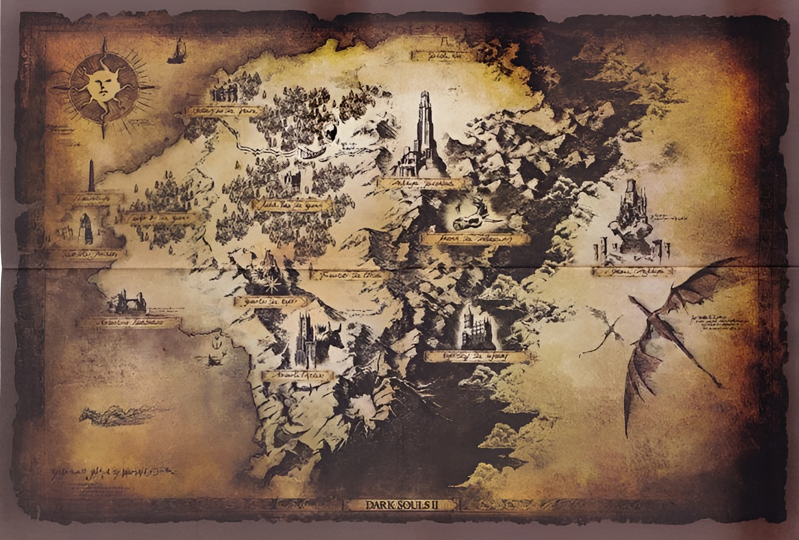

Dark Souls 2

Ages pass, thousands if not tens of thousands of years come and go and the age of the gods ruling from Anor Londo is all but forgotten. After the fire was linked at the end of Dark Souls 1 it became a cyle: while the first flame is strong new kingdoms arise and their is prosperity for a time, fire faded and kingdoms fall while the undead curse grows stronger, someone links the fire making the first flame strong again and the cycle repeats for millenia. Olaphis, Alken, Venn, Shulva, Eleum Loyce and many other kingdoms rise and fall leading up to now. The Kingdom of Drangleic now stands at the edge of this same cycle. The king of Drangleic, Vendrick was a noble and good king he sought to find a cure for the undead curse that plagued humanity along with his brother Aldia. Then came Nashandra, a shard of Manus, Father of the Abyss who coveted Vendrick's power. Deciding to seduce Vendrick, Nashandra assumed a human form of unparalleled beauty and warned him of a supposed looming threat beyond the sea: the Giants. She convinced him to invade the land of the giants to claim their power, which Vendrick did successfully. Vendrick then made Nashandra his queen, and under their leadership, Drangleic entered into peace. The rulership of Drangleic however, was not enough to quell Nashandra's want, and she desired an even greater power: the First Flame, which she intended to claim for herself by using Vendrick to get to the Throne of Want, where the first flame now resided. Before that could happen the giants invaded from over seas, a retaliation for what Drangleic had done to them previously and though Drangleic succeeded in defending itself they suffered a lot of damage in the proccess. It was around this time that Vendrick became wise to Nashandra's true nature and acted quickly to stop her. He took his ring which is needed to access the throne of want and hid it inside the shrine of Amana while he and his most trusted knights sealed themselves inside the undead crypt. This is where Dark Souls 2 begins.